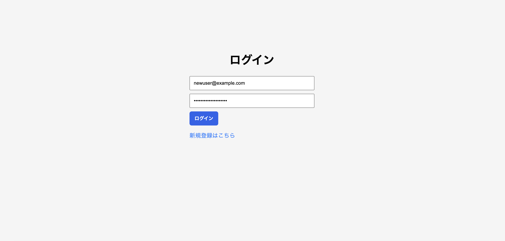
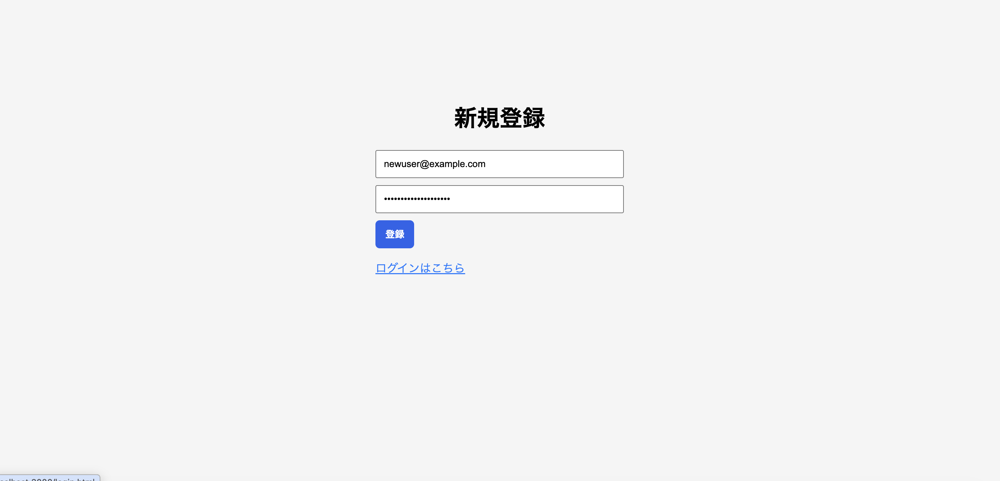
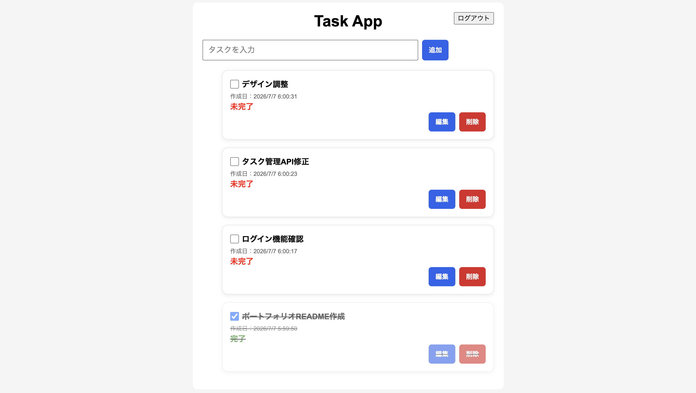
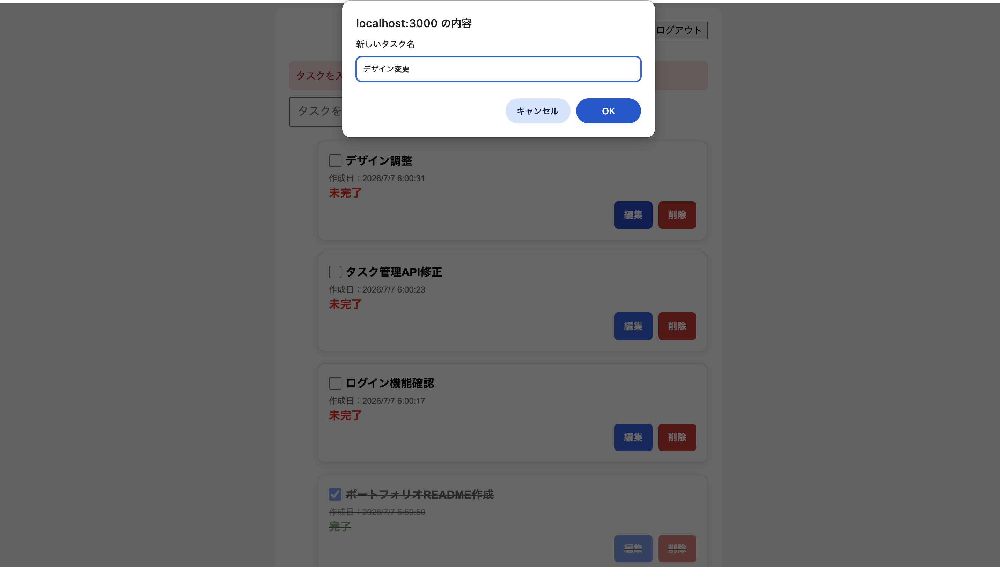

JWT認証付きタスク管理アプリ
Node.js・Express・SQLiteを使用した、 認証機能付きCRUDタスク管理アプリケーションです。
このプロジェクトは、JWT認証を利用した タスク管理Webアプリケーションです。
ユーザー登録・ログイン機能を実装し、 ログイン後はJWTによる認証を利用して ユーザー単位で独立したタスク管理を行えます。
フロントエンドとバックエンドを分離した構成で開発し、 REST APIによる通信設計を採用しています。
Node.jsによるWebアプリ開発、 Express Router、 JWT認証、 REST API設計、 データベース操作など、 実務に近い開発経験を目的として制作しました。
単純なCRUDアプリではなく、 認証・権限管理・API設計・テストまで含めた 実践的なアプリケーション構成を目指しました。
| Category | Technology | Purpose |
|---|---|---|
| Frontend | HTML / CSS / JavaScript | ユーザー画面構築 |
| Frontend Communication | Fetch API | REST API通信 |
| Backend | Node.js / Express | APIサーバー構築 |
| Database | SQLite3 | ユーザーデータ・タスク管理 |
| Authentication | JWT / bcrypt / dotenv | 認証・パスワード管理 |
ログイン時にJWTトークンを発行し、 認証済みユーザーのみAPIへアクセスできます。
登録ユーザーごとにデータを分離し、 安全なタスク管理を実現しています。
タスク作成・取得・更新・削除を実装しています。
フロントエンドとバックエンドを分離し、 APIベースの設計にしています。
入力チェック、 エラー処理、 成功メッセージ表示を実装しています。
PC・スマートフォン表示に対応しています。
HTML
CSS
JavaScript
Fetch API
Node.js
Express
JWT Middleware
SQLite3
JWTが有効な場合のみ、 タスクAPIへのアクセスを許可します。
本番環境へデプロイし、 フロントエンド・バックエンド間のAPI通信確認を実施しました。
| Service | Platform | Role |
|---|---|---|
| Frontend | Vercel | ユーザー操作画面 |
| Backend | Render | REST API Server |
| Database | SQLite | データ管理 |
| Method | Endpoint | Description |
|---|---|---|
| POST | /api/auth/register | ユーザー登録 |
| POST | /api/auth/login | ログイン |
| Method | Endpoint | Description |
|---|---|---|
| GET | /api/tasks | タスク一覧取得 |
| POST | /api/tasks | タスク追加 |
| PUT | /api/tasks/:id | タスク更新 |
| DELETE | /api/tasks/:id | タスク削除 |
Middlewareによる認証処理を分離し、 保守しやすい構成にしました。
bcryptを利用してパスワードを安全に管理しています。
Resource単位でAPIを設計し、 フロントエンドとの役割分担を明確化しました。
仕様書を作成し、 本番環境で動作確認を実施しました。
本番環境デプロイ後、 58項目の機能確認テストを実施しました。
| 項目 | 結果 |
|---|---|
| CRUD機能 | OK |
| JWT認証 | OK |
| ユーザー分離 | OK |
| API通信 | OK |
| スマホ表示 | OK |
| completed異常系 | 今後対応予定 |




Node.js・Express・SQLite・JWTを使用して開発した 認証付きタスク管理アプリです。
Express Router、 Middleware、 JWT認証、 CRUD操作を組み合わせ、 実務を意識した構成で開発しました。
開発からデプロイ、 API通信確認、 テスト仕様作成まで実施し、 Webアプリケーション開発の一連の流れを経験できる作品です。